A · 官方来源
A01 · 剑客盖伊

选取 FE7 盖伊的原版剑动作；目录的弓动作是 N426 的扩展。
目录动作：剑 / 弓 / 徒手
查看完整署名与来源
条目明确标注 F2U/F2E
[Myrmidon-Base] Vanilla FE7 Guy +Bow [M]
下方为整个目录的 Credits，可能包含其他武器版本。
F2U/F2E Base sword/unarmed animations by IS. Bow by N426.
30 组候选。点击「播放动画」查看原仓库 GIF，勾选后把编号发给我；也可以下载所选素材的署名。预览不自动播放，打开本页无需联网。
分类针对当前展示的动作。官方来源目录可能包含社区修正与扩展；「自制」指社区制作的动画，并不保证角色、部件或动作设计全部原创。具体区别与贡献者写在每张卡片里。
选择仅在当前页面有效；关页前复制编号或下载署名。
选取 FE7 盖伊的原版剑动作；目录的弓动作是 N426 的扩展。
目录动作：剑 / 弓 / 徒手
条目明确标注 F2U/F2E
[Myrmidon-Base] Vanilla FE7 Guy +Bow [M]
下方为整个目录的 Credits，可能包含其他武器版本。
F2U/F2E Base sword/unarmed animations by IS. Bow by N426.

Vanilla 战士目录。Credits 合列 IS、Vilkalizer，未拆分各自动作贡献；不承诺是未经修改的 ROM 原图。
目录动作：剑 / 枪 / 斧 / 手斧 / 徒手
条目明确标注 F2U/F2E
[Fighter-Base] Vanilla + Weapons [M]
下方为整个目录的 Credits，可能包含其他武器版本。
F2U/F2E
{IS, Vilkalizer}
Lance by RandomWizard.
选取 IS 的原版枪兵动作；剑、杖等扩展另有社区作者。
目录动作：剑 / 枪 / 杖 / 徒手
条目明确标注 F2U/F2E
[Soldier-Base] Vanilla +Weapons [M]
下方为整个目录的 Credits，可能包含其他武器版本。
F2U/F2E Base Soldier by IS. Sword animation by Arthur Pendragon. Staff by Orihara_Saki. Sword (Alt Range) by Seliost1.
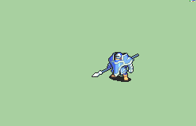
选取基础 Lance；目录另有 Vilkalizer 的 Smooth Lance 等社区扩展。
目录动作：剑 / 枪 / 斧 / 手斧 / 弓 / 魔法 / 杖 / 徒手
条目明确标注 F2U/F2E
[Knight-Base] Vanilla +Weapons [U]
下方为整个目录的 Credits，可能包含其他武器版本。
F2U/F2E Base Knight by IS. Sword by TheBlindArcher. Smooth Lance by Vilkalizer. Axe, Handaxe, and Bow by TheBlindArcher. Magic by Orihari_Saki and TheBlindArcher. Staff by knabepicer. Unarmed (Bow) by TheBlindArcher.
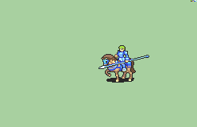
选取基础 Lance；远程魔法枪等扩展另有作者。
目录动作：剑 / 枪 / 斧 / 手斧 / 弓 / 魔法 / 徒手
依仓库战斗动画 F2E 总则；条目未重复标注
[Cavalier-Base] [M] Vanilla +Weapons
下方为整个目录的 Credits，可能包含其他武器版本。
Vanilla Cavalier by IS. Axe Alt1 by Primefusion. Axe Alt2 by Skitty. Handaxe Alt1 by Primefusion. Handaxe Alt2 by Skitty. Bow by Orihara_Saki, DerTheVaporeon, Kao, and Aurora. Magic by Orihara_Saki. 2. Lance (Ranged Magic) by Seliost1. Unarmed (Mount only) by tatata.
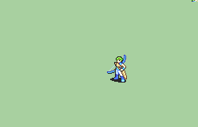
选取原版 Bow；标题中的 Merpin 负责新增 Magic。
目录动作：弓 / 魔法 / 徒手
条目明确标注 F2U/F2E
[Archer-Base] Vanilla FE7 + Magic [M] by Merpin
下方为整个目录的 Credits，可能包含其他武器版本。
F2U/F2E Animation by IS. Magic by Merpin.
选取原版 Magic；另一个 Magic (Fixed) 才是 Shin19 的修正版本。
目录动作：魔法 / 杖
条目明确标注 F2U/F2E
[Mage-Base] Vanilla FE7-8 +Fix [M] by Shin19
下方为整个目录的 Credits，可能包含其他武器版本。
F2U/F2E Vanilla animation by IS. Fixed magic by Shin19.
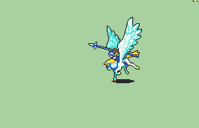
选取原版 Lance；新增剑、杖等动作另有作者。
目录动作：剑 / 枪 / 杖 / 徒手
依仓库战斗动画 F2E 总则；条目未重复标注
[Peg T1 Base] [F] Vanilla +Weapons
下方为整个目录的 Credits，可能包含其他武器版本。
Vanilla animation by IS. Sword by MK404. Staff by MakeFEGayer, fixes by UltraxBlade. Unarmed (Mount only) by tatata.
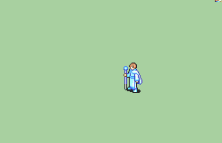
选取原版 Staff；新增魔法动作另有作者。
目录动作：魔法 / 杖 / 徒手
条目明确标注 F2U/F2E
[T1 Priest-Base] Vanilla Priest +Magic [M]
下方为整个目录的 Credits，可能包含其他武器版本。
F2U/F2E
Vanilla animation by IS.
Staff Magic by Shtick.
Magic animation by Jeorge_Reds.
Magic {Yerek} by Yerek.选取原版 Sword；Durandal 剑版本是社区扩展。
目录动作：剑 / 徒手
条目明确标注 F2U/F2E
[Swordmaster-Base] Vanilla FE6 [M]
下方为整个目录的 Credits，可能包含其他武器版本。
F2U/F2E Vanilla animation by IS. Durandal animation by Tatata and SteamingTofu. Durandal animation imported by ToGY.
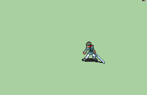
原版剑客外形的约书亚帽子改绘、肤色调整。
目录动作：剑 / 徒手
条目明确标注 F2U/F2E
[Myrmidon-Reskin] Joshua Hat Repal [M]
下方为整个目录的 Credits，可能包含其他武器版本。
F2U/F2E Made by SD9K. Darker skin repal by darkjaden
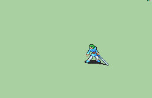
IS 原版剑客的 Alice 重配色版本。
目录动作：剑 / 徒手
条目明确标注 F2U/F2E
[Myrmidon-Reskin] Vanilla Repal [M] by Alice
下方为整个目录的 Credits，可能包含其他武器版本。
F2U/F2E Base Myrmidon by IS. Animation by Alice.
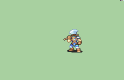
Fighter-Reskin 分类：为战士换上盔甲。
目录动作：斧 / 手斧 / 徒手
条目明确标注 F2U/F2E
[Fighter-Reskin] Armored Edit [M] by YellowToadstool
下方为整个目录的 Credits，可能包含其他武器版本。
F2U/F2E Animation by YellowToadstool.
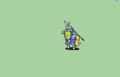
Paladin-Reskin 分类：去掉原版圣骑士的头盔。
目录动作：剑 / 枪 / 斧 / 手斧 / 徒手
条目明确标注 F2U/F2E
[Paladin-Reskin] Vanilla Helmetless [M] by tatata
下方为整个目录的 Credits，可能包含其他武器版本。
F2U/F2E Helmetless edit by tatata
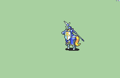
Vanilla Repalette 分类；Credits 只列 Pushwall 修正，未单列最初配色作者。
目录动作：剑 / 枪 / 斧 / 手斧 / 杖 / 徒手
依仓库战斗动画 F2E 总则；条目未重复标注
[Paladin-Reskin] [M] Vanilla Repalette
下方为整个目录的 Credits，可能包含其他武器版本。
Fixes by Pushwall. Staff by Primefusion and ported by Citrus.
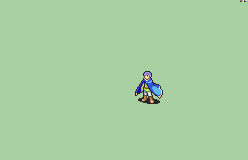
Mage-Reskin 分类：去帽造型，并重新配色。
目录动作：魔法
条目明确标注 F2U/F2E
[Mage-Reskin] Hatless Repal [M]
下方为整个目录的 Credits，可能包含其他武器版本。
F2U/F2E
Made by {GabrielKnight}
Repal by UltraFenix.原版天马骑士的 OreoStyx 重配色版本。
目录动作：剑 / 枪 / 杖 / 徒手
依仓库战斗动画 F2E 总则；条目未重复标注
[Peg T1 Base] [F] Vanilla +Weapons Repal
下方为整个目录的 Credits，可能包含其他武器版本。
Repalette by OreoStyx. Sword by MK404. Staff by MakeFEGayer.

Credits 明确为 IS 原版弓手的 DerTheVaporeon 变体。
目录动作：弓 / 徒手
条目明确标注 F2U/F2E
[Archer-Reskin] Der's Hat [M]
下方为整个目录的 Credits，可能包含其他武器版本。
F2U/F2E Original animation by IS. Archer Variant by DerTheVaporeon.
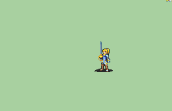
社区自定义击剑士动作；原目录还提供斧／手斧。
目录动作：剑 / 斧 / 手斧 / 徒手
条目明确标注 F2U/F2E
[Sword Custom] Fencer [F] by GabrielKnight
下方为整个目录的 Credits，可能包含其他武器版本。
F2U/F2E Animation by GabrielKnight.
社区制作的瓦尤（Mia）动画；角色来自《火焰之纹章》，不是官方 GBA 原版动画。
目录动作：剑 / 徒手
条目明确标注 F2U/F2E
[Myrmidon-Custom] Mia [F] by Redbean
下方为整个目录的 Credits，可能包含其他武器版本。
F2U/F2E Animation by RedBean. Script by Knabepicer. Script Fix by UltraxBlade Sword (Alt Ranged Attack) by Seliost1.
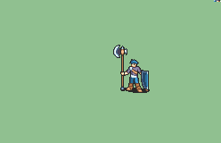
盾牌、部分挥斧动作与尘土来自 Nuramon，斧头部分来自 Redbean；完整署名保留全部贡献。
目录动作：斧 / 手斧 / 徒手
条目明确标注 F2U/F2E
[Fighter-Custom] Gladiator Fergus [M] by ZoramineFae
下方为整个目录的 Credits，可能包含其他武器版本。
F2U/F2E Animation by ZoramineFae. Shield comes from Nuramon's Hero (Specifically, his Armored variant) Dirt particles come from Nuramon's Ephraim Heavy Infantry Great Lord, as does the entire motion of the basic (non-crit) Swing. Animation also partially takes from Redbean's Echidna Hero's axe. Shoutout to Eden for thinking kicking a shield was hilarious (she was very, very correct)
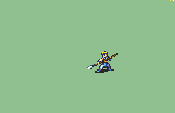
SALVAGED 自制步行枪斗士。
目录动作：枪 / 徒手
条目明确标注 F2U/F2E
[Custom Lance] Lancer [M] by SALVAGED
下方为整个目录的 Credits，可能包含其他武器版本。
F2U/F2E Animation by SALVAGED.
Nuramon 自制哨卫；本次选择枪，目录另有其他作者的剑扩展。
目录动作：剑 / 枪 / 斧 / 手斧 / 徒手
条目明确标注 F2U/F2E
[Custom Lance] Sentinel [U] by Nuramon
下方为整个目录的 Credits，可能包含其他武器版本。
F2U/F2E Animation by Nuramon. Sword versions by Craigrandall55.

Nuramon 的黄金骑士 v2，HGS 参与盔甲重新着色。
目录动作：剑 / 枪 / 斧 / 手斧 / 弓 / 徒手
依仓库战斗动画 F2E 总则；条目未重复标注
[Paladin-Custom] [U] Gold Knight v2 by Nuramon
下方为整个目录的 Credits，可能包含其他武器版本。
Still and animation by Nuramon. Reshaded armor HyperGammaSpaces (HGS).
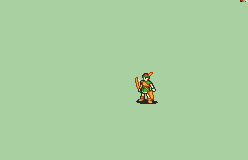
RenOokami 原图；Knabepicer 制作弓与徒手动画。
目录动作：弓 / 徒手
条目明确标注 F2U/F2E
[Archer-Custom] Fletchling [M] by RenOokami
下方为整个目录的 Credits，可能包含其他武器版本。
F2U/F2E Original spritesheet by RenOokami. Bow/unarmed by Knabepicer
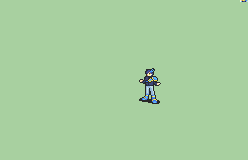
Dejais 的战斗法师施法动画。
目录动作：魔法
条目明确标注 F2U/F2E
[Mage-Custom] Battle Mage [M] by Dejais
下方为整个目录的 Credits，可能包含其他武器版本。
F2U/F2E Magic by Dejais
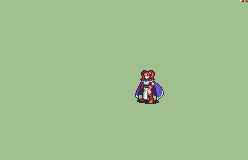
RedBean 绘制，7743 动画脚本；角色取自《霸者之剑》漫画，并非原创角色。
目录动作：魔法 / 杖
条目明确标注 F2U/F2E
[Sage-Custom] Fire Sage [F] by RedBean
下方为整个目录的 Credits，可能包含其他武器版本。
F2U/F2E Character name: Fire Pattern Comics "Sword of the Overlord" Jie Mi https://tieba.baidu.com/p/7146291531?pn=6 Author: RedBean AnimationScript: 7743
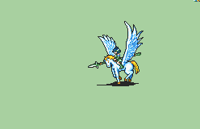
Redbean 绘制天马骑士，Seliost1 制作动画脚本。
目录动作：枪 / 徒手
条目明确标注 F2U/F2E
[Peg Custom] [F] Pegasus Knight by RedBean
下方为整个目录的 Credits，可能包含其他武器版本。
F2U/F2E Animation by Redbean. Scripting by Seliost1.

以 FE10 风格创作的重甲；Iscaneus 静态图，Nuramon 与 Jeorge Reds 动画及脚本。
目录动作：剑 / 枪 / 斧 / 手斧 / 弓 / 魔法 / 徒手
条目明确标注 F2U/F2E
[Knight-Custom] FE10-Style [U] by Nuramon
下方为整个目录的 Credits，可能包含其他武器版本。
F2U/F2E Base still made by Iscaneus. Animation and scripting by Nuramon and Jeorge Reds. Magic by flasuban. Unarmed with quiver and critical recoil bow edits by Topaz Light.
多作者制作的大贤者动作；预览选杖，原目录还有魔法版本。
目录动作：魔法 / 杖
条目明确标注 F2U/F2E
[T3 Custom] Archsage [M] by Nuramon
下方为整个目录的 Credits，可能包含其他武器版本。
F2U/F2E Still and Animation by Nuramon. Boots by Plant Academy. Swirl vfx by Dachi. Orb vfx by Steaming Tofu. Optional sound effects by Melledoneus.